China Employee Termination 2026: Pulse Decision-Tree Brief for Foreign Employers
Key takeaways
- The safest first move in China termination is a decision-tree gate, not immediate payout negotiation.
- Route legality, evidence quality, and payroll/tax readiness must pass in sequence before employee communication.
- Foreign employers can reduce disputes by assigning explicit go/no-go owners at each branch.
- City-level interpretation still matters, so local validation is required before final route lock.
- Pulse-style execution means short, high-signal decisions upfront, with legal depth in a secondary appendix.
What changed and why this matters now
In 2026, cross-border teams are often handling terminations under tighter timelines and with less local bandwidth. That operating reality increases a common failure mode: decisions are made as if every case can follow one linear script. In China, that is risky. Different fact patterns require different route logic and control intensity. A decision-tree format helps global stakeholders see exactly where a case should stop, escalate, or proceed.
This run shifts to a decision-tree primary narrative (distinct from watchlist, myth-vs-fact, matrix, and switchboard formats) so leadership can quickly determine “can we proceed now?” without skipping legal and payroll control layers.
Plain-language legal context first
China does not apply at-will termination logic. Employer-initiated termination generally requires a lawful statutory basis supported by coherent facts and compliant process execution. Public legal anchors include the PRC Labor Contract Law framework, implementing regulation references (including Decree No. 535 context), and Supreme People’s Court labor-dispute interpretation materials. For foreign employers, the practical translation is clear: business rationale must be transformed into legally supportable route selection and evidence continuity. If those elements do not align, downstream dispute and correction costs often rise.
A decision tree works because it mirrors how tribunals and counterparties typically test a case: legal basis first, then facts/process integrity, then execution consistency.
Pulse decision tree (headline-driven)
Root question: Is there a supportable employer-side route today?
- If no: move to controlled alternative strategy (often negotiated path design), do not communicate route claims.
- If yes: proceed to Evidence Branch.
Evidence Branch: Is the chronology externally defensible?
- If no: remediation sprint (records, ownership, consistency checks) before any employee-facing step.
- If yes: proceed to Communication Branch.
Communication Branch: Are scripts and approvals aligned with route memo?
- If no: hold case, reset narrative controls, retrain manager spokesperson.
- If yes: proceed to Payroll Branch.
Payroll Branch: Is final pay/tax/social handling reconciled before communication?
- If no: no-go. Delay communication until reconciliation and payment-proof plan are signed.
- If yes: proceed to Execution Branch.
Execution Branch: Can post-event archive withstand dispute review?
- If no: execute only with same-day closure controls and evidence indexing.
- If yes: proceed, then close with retention QA.
Decision-tree quick map for foreign leaders
| Branch | Go condition | Stop condition | Executive action |
|---|---|---|---|
| Route | Lawful route supported by facts | Route rationale unclear | Re-scope strategy before any notice |
| Evidence | Complete and coherent chronology | Gaps/contradictions | Fund remediation, delay communication |
| Communication | Script and approver alignment | Manager improvisation risk | Lock spokesperson + script control |
| Payroll | Final settlement/tax readiness signed | Reconciliation pending | Shift date; avoid partial messaging |
| Archive | Indexed evidence and closure memo | Fragmented records | Add closure controls before case close |
Why this framing works for foreign clients
Foreign decision makers often need one-page clarity under time pressure: where is the case blocked, what unlocks it, and who owns the next move. The decision-tree format provides exactly that. It also reduces internal friction between headquarters and local teams by making “no-go” decisions transparent and criteria-based rather than opinion-based.
Practical scenarios
Scenario 1: Route looks valid, evidence does not
Legal route seems possible, but the chronology shows contradictions between manager statements and documents. If teams proceed anyway, the case may unravel at challenge stage.
Decision-tree result: stop at Evidence Branch, run remediation, re-test before moving on.
Scenario 2: Communication ready, payroll not ready
HR and legal approve communication script, but final pay and IIT treatment remain unresolved. This creates avoidable post-meeting disputes.
Decision-tree result: no-go at Payroll Branch; communication date shifts automatically.
Scenario 3: High urgency from business head
A business unit leader requests immediate action for morale reasons. Local validation memo is missing and approvals are incomplete.
Decision-tree result: stop at Route/Communication branches; require documented risk acceptance if override is requested.
Role-owned SOP (tree-driven)
Node 1 — Route qualification
Owners: HRBP + Legal + local reviewer
- Build route rationale memo with supporting facts.
- Confirm city-level validation note.
- Classify confidence: high / medium / low.
Gate: low confidence = automatic no-go.
Node 2 — Evidence integrity
Owners: HR Operations + Manager + Compliance
- Build chronology ledger with date/source/owner.
- Reconcile narrative conflicts.
- Confirm documentary completeness threshold.
Gate: unresolved contradiction = hold + escalation.
Node 3 — Communication readiness
Owners: HR lead + manager sponsor + approver
- Use approved script modules only.
- Define spokesperson and fallback spokesperson.
- Capture pre-brief acknowledgment.
Gate: unapproved script usage risk = hold.
Node 4 — Payroll/tax settlement readiness
Owners: Payroll + Tax + HR Ops
- Finalize pay components and timing.
- Validate leave treatment and IIT/social consistency.
- Prepare payment proof and payslip narrative.
Gate: unsigned reconciliation = no communication.
Node 5 — Execution and closure
Owners: HR compliance + records + payroll archive owner
- Capture meeting metadata and outcome.
- Store signed docs and payment proof.
- Publish closure memo and archive index.
Gate: archive QA fail = case remains open.
Required document checklist
- Employee profile snapshot (contract/tenure/entity/city)
- Route rationale memo (primary + fallback)
- City-level validation memo
- Chronology ledger (source-tagged)
- Relevant performance/discipline documentation
- Script package and approvals
- Settlement documents and acknowledgments
- Final payroll/severance worksheet
- IIT/social handling note
- Payment execution proof
- Closure memo + evidence index
Exception handling in decision-tree terms
Exception A: Missing route support
- Tree impact: root branch blocked.
- Action: redesign strategy; avoid route assertions in communication.
Exception B: New contradictory evidence appears late
- Tree impact: Evidence Branch reopens.
- Action: pause downstream steps; conduct contradiction review and update memo.
Exception C: Manager deviates during meeting
- Tree impact: Communication Branch integrity compromised.
- Action: create incident note; align legal follow-up messaging.
Exception D: Payroll correction after communication
- Tree impact: Payroll Branch post-fail.
- Action: correction workflow + transparent documentation + audit retention.
Exception E: Local interpretation disagreement
- Tree impact: Route Branch uncertainty.
- Action: decision memo with options/risks, obtain localized practitioner input.
System implementation notes
- Add case status fields tied to tree nodes (Route/Evidence/Communication/Payroll/Closure).
- Configure workflow locks so downstream tasks cannot open before upstream node approval.
- Keep immutable approval timestamps and script versions.
- Track node-failure frequency to identify repeat weaknesses.
- Build executive dashboard: cases by node, average stall time, correction incidents, dispute outcomes.
Common mistakes and prevention
- Mistake: skipping node order due to urgency.
Prevention: automated workflow locks and visible no-go status.
- Mistake: treating route memo as optional.
Prevention: root-node requirement before any case movement.
- Mistake: payroll sign-off after communication.
Prevention: hard pre-communication payroll node gate.
- Mistake: city differences ignored.
Prevention: mandatory local validation memo.
- Mistake: poor closure indexing.
Prevention: archive node QA before close.
What to do now
- Deploy a five-node decision tree in your China termination workflow.
- Assign accountable owners for each node and publish no-go authority.
- Require city-level validation before route lock.
- Integrate payroll/tax sign-off before any employee communication.
- Create incident protocol for script deviations and late corrections.
- Review recent cases by node to identify recurring bottlenecks.
- Update training and controls based on node-failure patterns.
What to watch next
- City-level practical interpretation may continue to diverge in emphasis.
- Higher case volume can increase branch-skipping pressure.
- Practitioner guidance updates may refine what is viewed as sufficient evidence in contested cases.
FAQ
1) Why use a decision tree for China termination?
It prevents branch-skipping and clarifies who can approve progression at each risk point.
2) Is route selection more important than payout size?
Usually yes at the start—an unsupported route can undermine any payout strategy.
3) Can communication proceed while payroll is still finalizing?
That is high risk; payroll/tax readiness should be a pre-condition.
4) How do we handle local uncertainty?
Document it, get localized input, and keep the route branch blocked until resolved.
5) What is the most common preventable error?
Proceeding to communication before evidence and payroll branches are truly green.
6) Should managers control messaging alone?
No. Manager messaging should run under approved script controls with HR/legal governance.
7) How do we improve decision quality over time?
Measure node failures and update controls where repeated stalls occur.
Legal depth appendix (secondary)
This brief is based on a source set combining official/legal materials and practitioner interpretation. Core legal anchors are the PRC Labor Contract Law framework, implementing regulation references linked to Decree No. 535 context, and Supreme People’s Court labor-dispute interpretation materials. Practitioner and payroll-context sources help convert legal principles into actionable controls for foreign employers. Remaining uncertainty is mainly in city-specific and fact-specific application, which should be validated with local counsel/practitioner input in live matters.
Disclaimer
This content is for informational purposes only and does not constitute legal, tax, or employment advice.
Sources
- National People’s Congress (Labor Contract Law, English text), accessed 2026-03-05: http://www.npc.gov.cn/zgrdw/englishnpc/Law/2007-12/13/content_1384064.htm
- State Council Gazette reference (implementing regulation / Decree No. 535 context), accessed 2026-03-05: https://www.gov.cn/gongbao/content/2008/content_1124615.htm
- Supreme People’s Court labor dispute interpretation update page, accessed 2026-03-05: https://www.court.gov.cn/fabu/xiangqing/243981.html
- China Briefing, Employee Termination in China, accessed 2026-03-05: https://www.china-briefing.com/news/employee-termination-in-china/
- ICLG Employment & Labour Laws and Regulations: China, accessed 2026-03-05: https://iclg.com/practice-areas/employment-and-labour-laws-and-regulations/china
- Littler ASAP analysis on China employment law developments, accessed 2026-03-05: https://www.littler.com/news-analysis/asap/key-recent-developments-chinas-employment-law-china-us-comparative-perspective
- PwC PRC Individual Income Tax summary, accessed 2026-03-05: https://taxsummaries.pwc.com/peoples-republic-of-china/individual/taxes-on-personal-income
Need local employment support in China?
If you need a compliance-first partner for hiring, payroll, and risk controls in China, China-Payroll.com can help evaluate the right setup.
Image Prompt Pack
Create a 16:9 hero image for article title: 'China Employee Termination 2026: Pulse Decision-Tree Brief for Foreign Employers'. Scene: global operations team evaluating workforce model options for China market entry. Include motifs: decision matrix, org chart,…